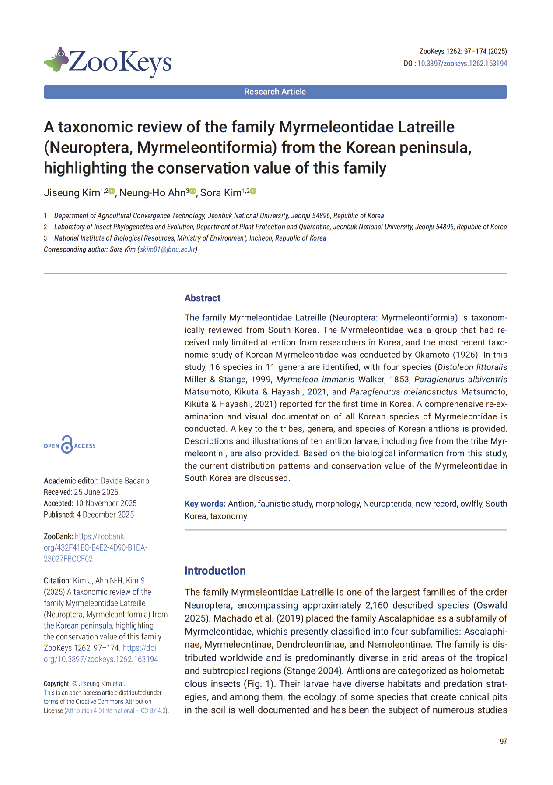
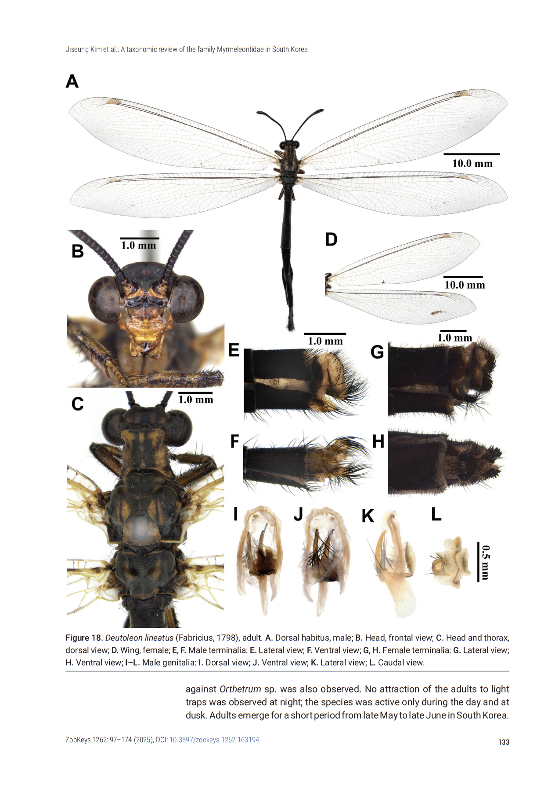
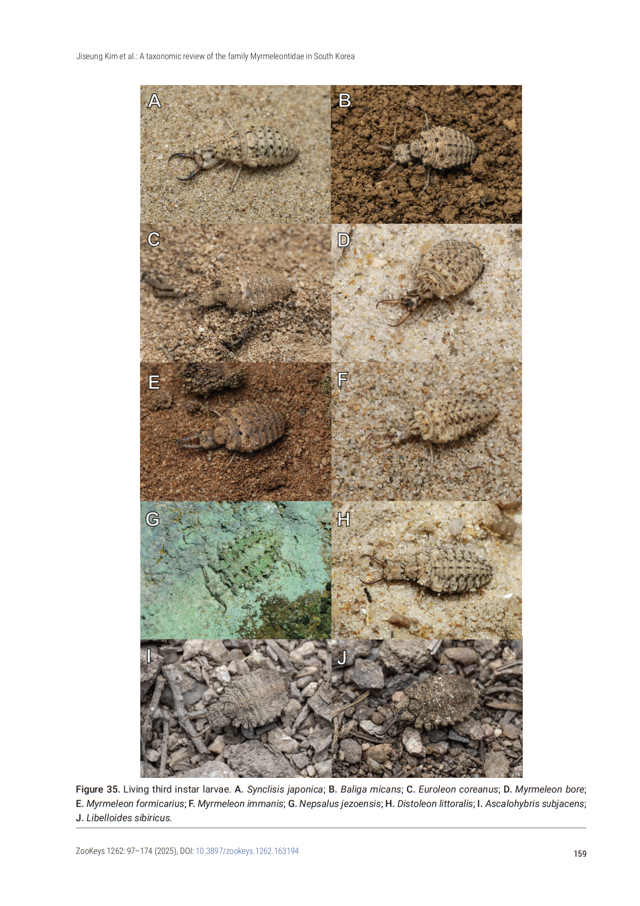
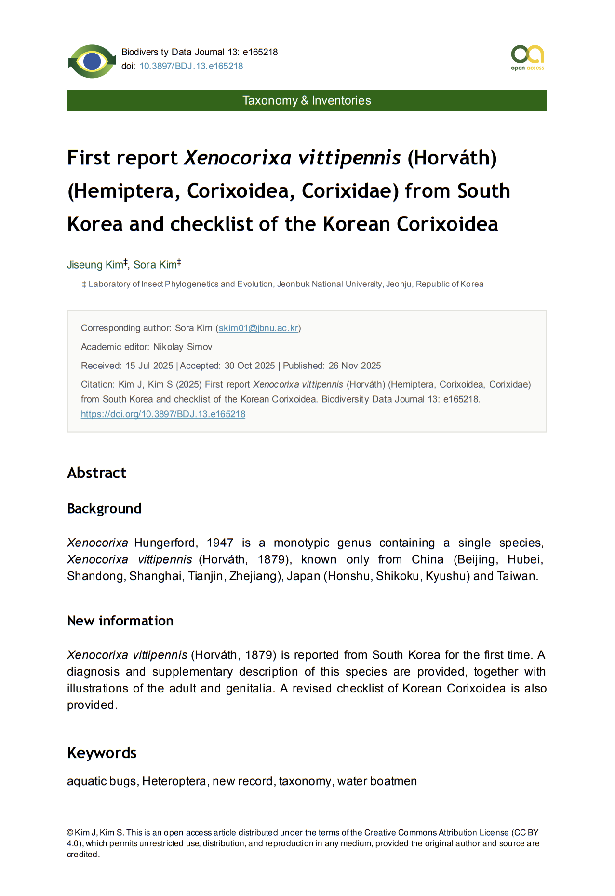
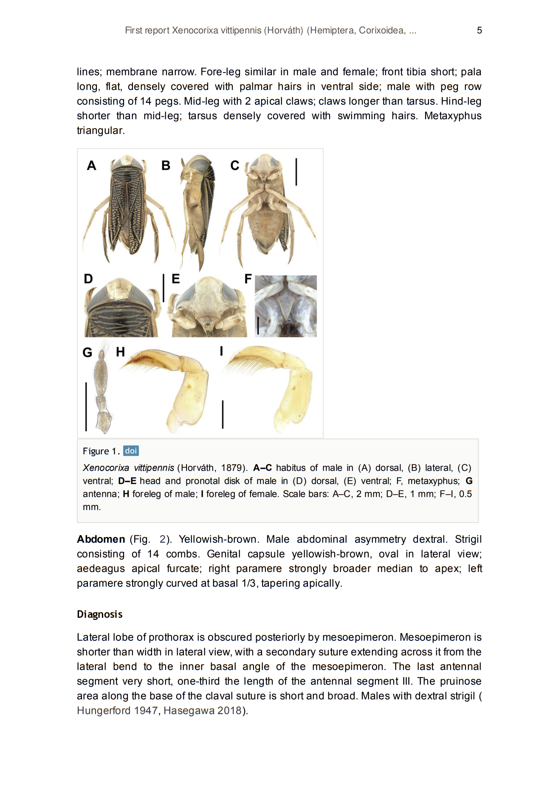
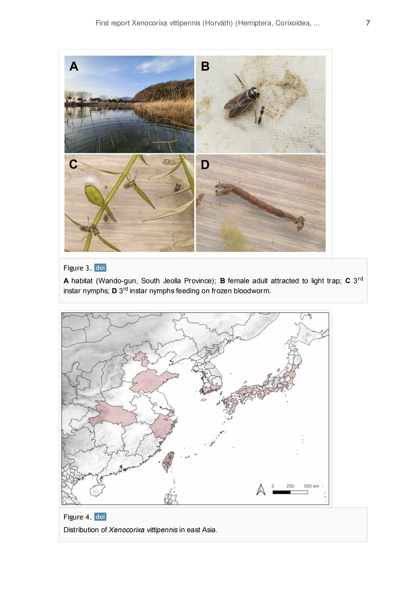

Publications
"A taxonomic review of the family Myrmeleontidae Latreille (Neuroptera, Myrmeleontiformia) from the Korean peninsula, highlighting the conservation value of this family."
ZooKeys 1262 (2025): 97.
DOI: 10.3897/zookeys.1262.133221
DOI: 10.3897/zookeys.1262.133221



"First report Xenocorixa vittipennis (Horváth) (Hemiptera, Corixoidea, Corixidae) from South Korea and checklist of the Korean Corixoidea."
Biodiversity Data Journal 13 (2025): e165218.
DOI: 10.3897/BDJ.13.e165218
DOI: 10.3897/BDJ.13.e165218


